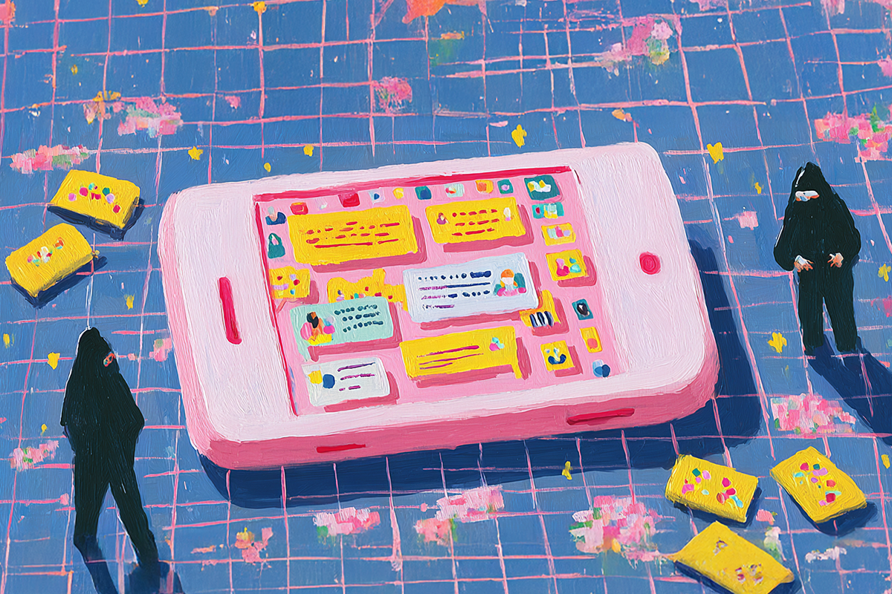
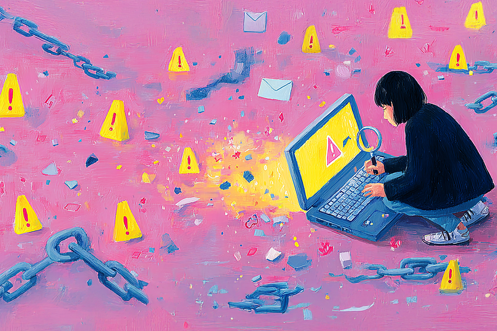
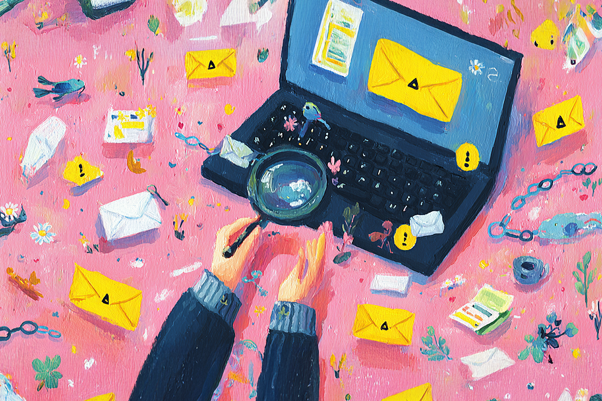
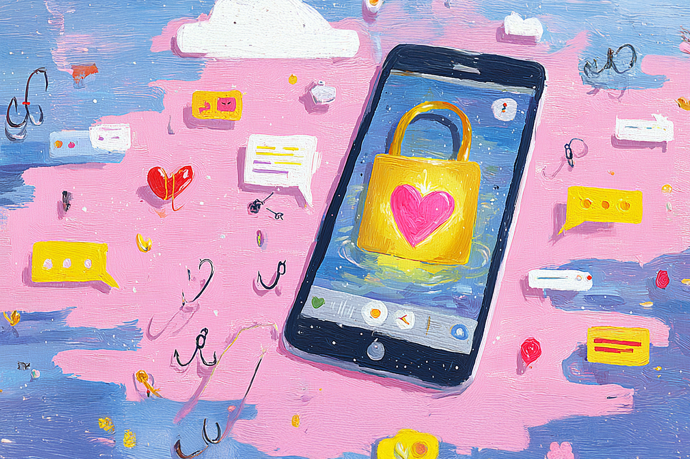

No era tu banco, ni tu paquete, ni tu ex
El 2025 nos está enseñando a leer entre líneas (y links)
El 2025 nos está enseñando a leer entre líneas (y links)

El 2025 quedará en el historial: los ataques con mensajes falsos se dispararon en un 71% en Chile.
WhatsApp, correos, mensajes de texto… todos se llenaron de supuestos avisos de bancos, premios o paquetes que jamás pediste. Y si alguna vez estuviste a un clic de caer, tranqui que no estás solo.
Esta ola de phishing nos obligó a cambiar hábitos y a desconfiar, pero con estilo.

Antes abríamos cualquier link sin pensar mucho, pero hoy revisamos los remitentes, las URLs y hasta faltas de ortografía bastante sospechosas. Pasamos de tener una relación de confianza con internet a una de verificación.
No, no es paranoia, es madurez digital. Porque protegernos online ahora es parte del autocuidado, igual que usar protector solar o guardar como hueso santo el celular en el metro.

La ciberseguridad ya no es solo cosa de expertos. Ahora activamos la doble verificación, evitamos redes abiertas y sospechamos de correos “urgentes”.
Son pequeños gestos que antes parecían exagerados, hoy nos salvan del clic equivocado.

En un año donde los hackeos se disparan, la confianza digital es lo más valioso. En ComparaOnline la tenemos clara: apostamos por la seguridad no solo en nuestros productos, sino también cuidando los datos de quienes confían en nosotros.
Porque entre hackers, IA y mensajes falsos, hay algo que sigue siendo real: la confianza se gana cuidándola. Si quieres saber más, te invitamos a leer este post.
 Tecnología
TecnologíaSi eres como yo y revisas TikTok e Instagram constantemente, te habrás dado cuenta de que estas redes son casi como un experimento social.
 Tecnología
TecnologíaHablamos mucho de inteligencia artificial. La tenemos integrada en nuestra vida, nos ayuda en nuestros trabajos y le preguntamos cosas de…
 Tecnología
TecnologíaDurante años hemos pensado en la inteligencia artificial como algo súper frío: servidores gigantes, computadores procesando datos y…